Academia Gênesis — Iepê/SP
Esta cartilha tem como objetivo orientar sobre boas práticas de acessibilidade, ergonomia e segurança em academias, com base em visita técnica realizada à Academia Gênesis, localizada em Iepê/SP. O objetivo é promover um ambiente mais inclusivo, seguro e eficiente para colaboradores e alunos.
Durante a visita técnica, observou-se que a academia possui circulação funcional e acesso relativamente simples aos ambientes internos. Entretanto, foram identificados alguns pontos que limitam a acessibilidade universal, como ausência de rampas de acesso, presença de degraus na entrada principal e nos banheiros, além da inexistência de piso tátil e sinalizações acessíveis para pessoas com deficiência visual ou mobilidade reduzida. Também não foram observadas adaptações específicas nos banheiros ou corredores para cadeirantes e usuários com dificuldades de locomoção.
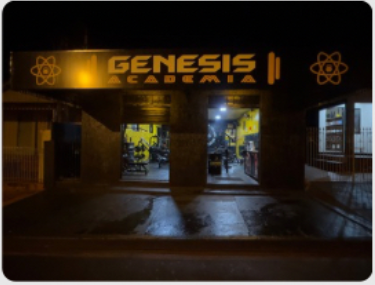
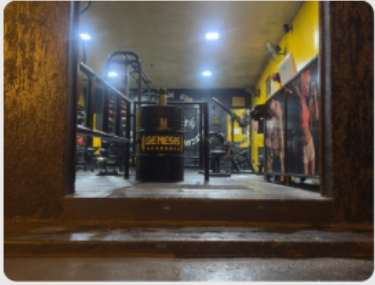
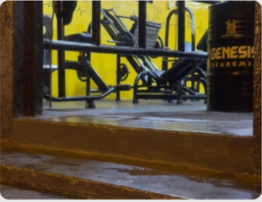
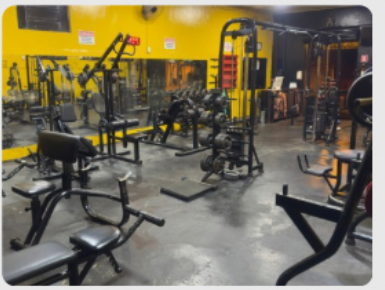
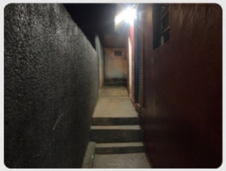
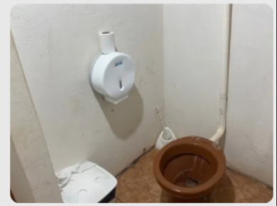
A academia apresenta boa variedade de equipamentos e organização funcional dos espaços. Os aparelhos possuem estrutura adequada para realização dos exercícios e os espelhos auxiliam na correção postural dos usuários. Apesar disso, foram observados alguns fatores ergonômicos que podem impactar o conforto, como ventilação limitada em determinados setores, iluminação irregular com reflexos nos espelhos, circulação reduzida entre alguns aparelhos e desgaste parcial do piso em áreas de treino.
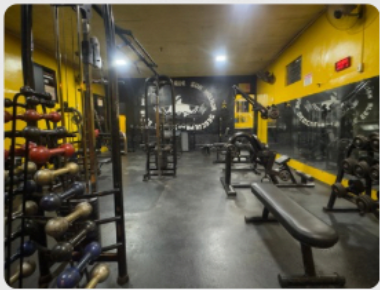
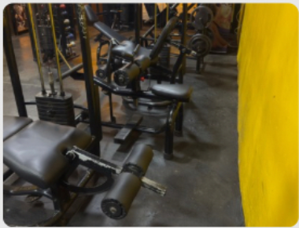
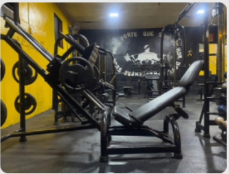
Foram identificados equipamentos de segurança básicos, como extintores de incêndio e placas informativas distribuídas em alguns setores da academia. Entretanto, também foram observadas fissuras no piso, presença de fiação aparente em determinados ambientes, iluminação limitada em corredores e ausência de sinalização completa de emergência e rotas de fuga.
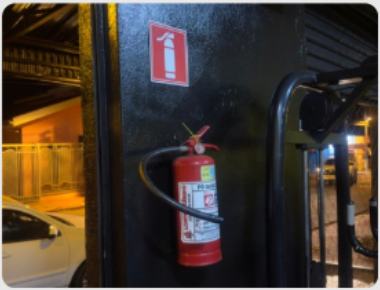
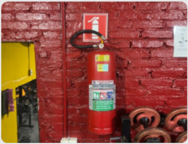
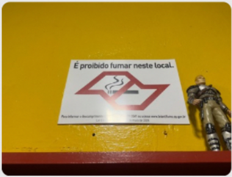
A Academia Gênesis apresenta atendimento próximo e personalizado aos alunos, favorecendo comunicação acessível e acompanhamento durante os exercícios. O ambiente demonstra preocupação com higienização dos aparelhos e organização funcional das atividades. Apesar disso, alguns ambientes apresentam excesso de informações visuais, falta de padronização em determinadas sinalizações e limitações relacionadas à acessibilidade organizacional.
A análise realizada na Academia Gênesis permitiu identificar aspectos positivos relacionados à organização, variedade de equipamentos e atendimento aos usuários, além de pontos que podem ser aprimorados em acessibilidade, ergonomia e segurança. As recomendações apresentadas nesta cartilha contribuem para melhoria do conforto, da inclusão, da segurança e da qualidade do ambiente, promovendo melhores condições para colaboradores e frequentadores da academia. Dessa forma, pequenas adequações estruturais e organizacionais podem gerar impactos positivos significativos na experiência e bem-estar dos usuários.